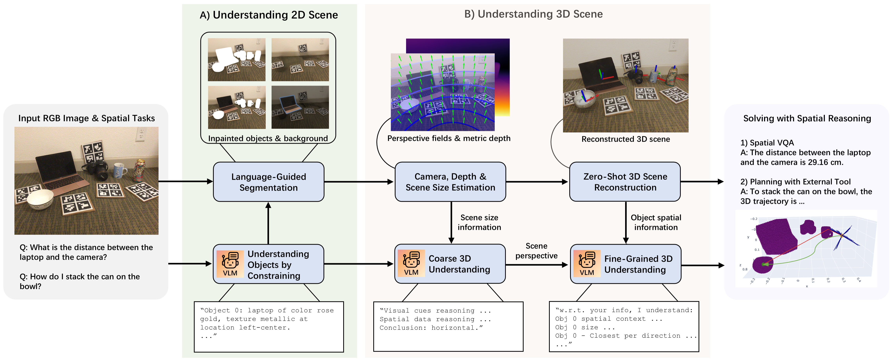
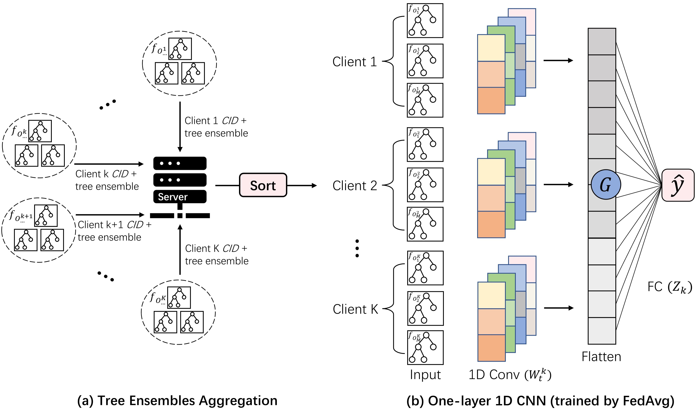
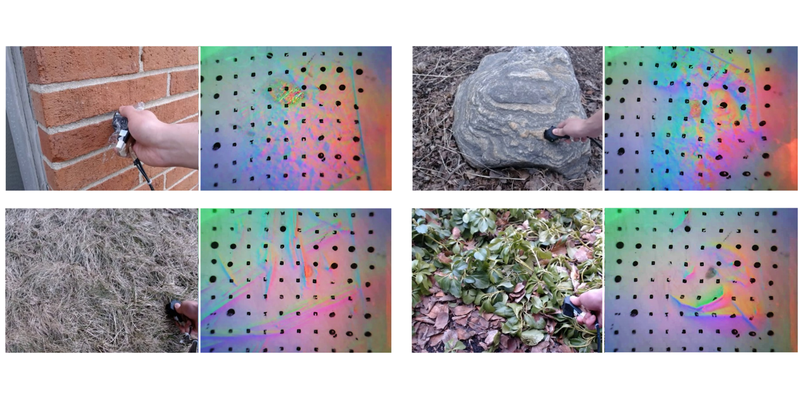

Chenyang (Danny) Ma
About Me
I am a Ph.D. student in Computer Science at the University of Oxford, co-supervised by Prof. Andrew Markham and Prof. Niki Trigoni. My study is generously funded by the EPSRC DTP International Doctoral Scholar scholarship. I had the privilege of collaborating closely with Xavier Puig and Ruta Desai at Meta FAIR (2024) and spent wonderful times interning at Roku (2024) and Flower Labs (2023).
Prior to my Ph.D., I worked as a research assistant in Cambridge Machine Learning Systems Lab, supervised by Prof. Nicholas Lane. I obtained my B.S.E. degree from University of Michigan, completing multiple projects under the guidances of Prof. Andrew Owens, Prof. Wenzhen Yuan, and Prof. Paul Green.
I am actively looking for a research internship for Summer 2025. Feel free to contact me for any research opportunities!
Research Interests
My main research interest focuses on developing human-centered intelligent agents that live in both virtual and physical worlds. So far, my Ph.D. work falls in the intersection of 3D Understanding, Robot Learning, and Computer Vision.
On the side, I also enjoy working with vision applications that utilize various modalities (Vision, Tactile) and AI methods that are less centralized and more collaborative (Federated Learning).
News
- [Sep. 2024] Our paper SpatialPIN got accepted into NeurIPS 2024!
- [Jul. 2024] Started my internship at Roku Advanced Development! (Mentor: Michael Sanders)
- [Jun. 2024] Started my research collaboration with Meta FAIR! (Mentors: Xavier Puig, Ruta Desai)
- [Oct. 2023] Started my Ph.D. journey at the University of Oxford.
Selected Publications (Full list on Google Scholar)
-
 NeurIPSSpatialPIN: Enhancing Spatial Reasoning Capabilities of Vision-Language Models through Prompting and Interacting 3D PriorsNeural Information Processing Systems (NeurIPS), 2024.
 EuroMLSysGradient-less Federated Gradient Boosting Tree with Learnable Learning RatesWorkshop on Machine Learning and Systems (EuroMLSys), 2023.
 NeurIPSTouch and Go: Learning from Human-Collected Vision and TouchNeurIPS Datasets and Benchmarks, 2022.
 CVPR
Sparse and Complete Latent Organization for Geospatial Semantic SegmentationComputer Vision and Patter Recognition (CVPR), 2022.
CVPR
Sparse and Complete Latent Organization for Geospatial Semantic SegmentationComputer Vision and Patter Recognition (CVPR), 2022.
Services
Conference Reviewer
IEEE/CVF Conference on Computer Vision and Pattern Recognition (CVPR) 2023 NeurIPS Datasets and Benchmarks Track 2022
Teaching Assistant
Powered by Jekyll and Minimal Light theme.